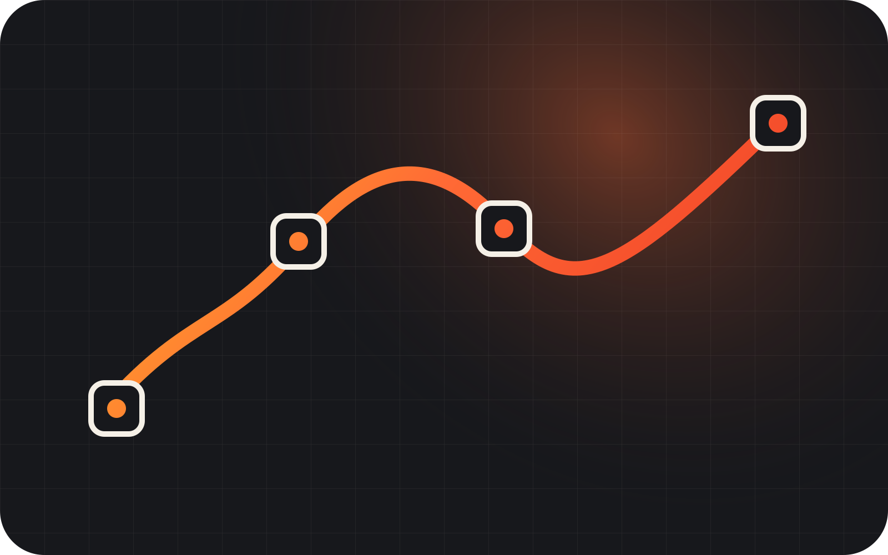

Describe the state
Use #Preview, @Previewable or PreviewProvider.

Prefire reads #Preview and turns it into snapshot tests, an iOS Playbook and PNG renders your AI agent can see. No second set of UI states.
The states already in your project become tests, a visual catalog and images an agent can read.
One set of preview states becomes repeatable checks, a browsable interface catalog and PNG renders for agents and CI.

An agent that edits a view can't see the result. Prefire builds the app and hands the previews back as images, on any iPhone or iPad, light or dark, without Xcode Previews.
Make the sign-in button bigger and check it in dark mode on iPhone and iPad.
The button fits on both devices. On iPad the form stretches too wide, so I capped it at 420 pt and rendered again.
list_previewsEvery preview of the project with its file and line, so the agent knows what it can render.
render_previewsBuilds the app and returns PNGs, on the devices, color scheme and Dynamic Type asked for.
build_boardAn HTML board of the last render, grouped by user story, to review a whole flow at once.
Prefire handles the path from source code to generated output.
Use #Preview, @Previewable or PreviewProvider.
The plugin finds previews and generates Swift output.
Run snapshots, open Playbook or let an agent render the same states.

Use the plugin in Xcode or SwiftPM. Use the CLI for local and CI runs, and the MCP server for AI agents.
Add Prefire as a package dependency, then attach the test or Playbook plugin to the matching target.
Tests target → PrefireTestsPlugin App target → PrefirePlaybookPlugin
Add Prefire once, then attach plugins to the targets that should receive generated output.
.package( url: "https://github.com/BarredEwe/Prefire.git", from: "6.4.0" ) .plugin(name: "PrefireTestsPlugin", package: "Prefire")
Install with Homebrew, then generate tests or Playbook models explicitly.
brew tap barredewe/prefire brew install prefire prefire tests prefire playbook prefire render "Sign in" --device iPad --color-scheme dark
Install the CLI, add render_configuration to .prefire.yml, then connect the server from the project folder.
# Claude Code claude mcp add prefire -- prefire mcp # or the plugin, with a skill /plugin marketplace add BarredEwe/Prefire /plugin install prefire@prefire # Codex codex mcp add prefire -- prefire mcp # VS Code code --add-mcp '{"name":"prefire","command":"prefire","args":["mcp"]}'
Add .prefire.yml when the defaults no longer match your project. Project-specific control stays in the config.
test_configuration: target: PrefireExample simulator_device: "iPhone15,2" required_os: 16 playbook_configuration: preview_default_enabled: true render_configuration: scheme: PrefireExample test_target: PrefireExampleTests
Open-source apps that turn their previews into tests with Prefire.
Multi-emulator frontend. Snapshot tests for its SwiftUI package.
LINAGORASecure Matrix messenger. Previews in the iOS notification extension.
macOS · iOSNative client for the Reachy Mini robot. Preview-driven snapshot tests.
iOSiOS client for a federated social network.
Let Prefire turn them into something the whole team, and its agents, can verify.